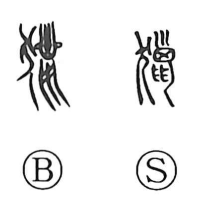

猟

Uncategorized
Kun: | On: ryo
hunting ・ to hunt ・ to search for
Explanation
This is a phono-semantic character whose original form is 獵. The animal radical supplies the sense of pursuing game, while the phonetic element marks the on reading ryo and was originally drawn as a horse in full flight, its mane streaming—an image that vividly conveys the act of the chase. The Shuowen defines it as hunting freely and pursuing birds and beasts, and the character also broadened to mean hunting for things in general, as in compounds like 猟書 (seeking out books) and 渉猟 (roving widely in search). In antiquity, communal hunts were weighty public events, sometimes conducted as rites in conjunction with worship, sometimes paired with military training, and at times performed for divination, as in oath-hunts.